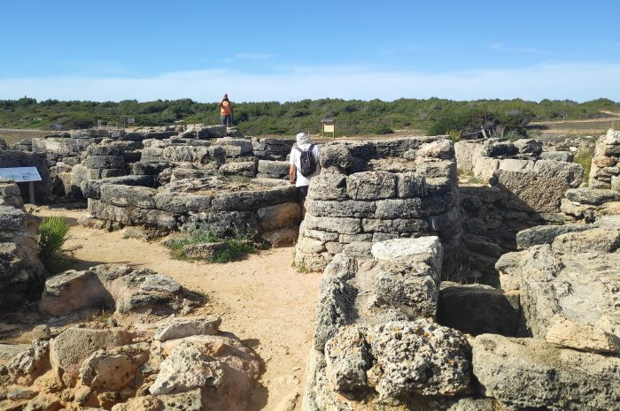
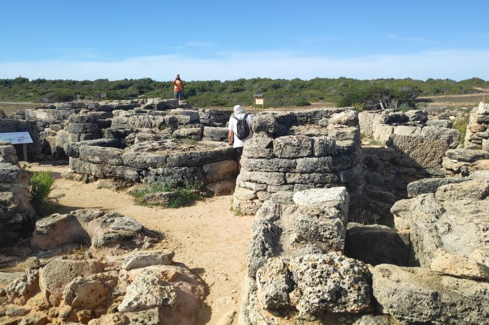

El dolmen de Son Real és un dolmen situat a la Finca Pública de Son Real, dins el terme de Santa Margalida, a Mallorca. Es tracta d'una estructura funerària de caràcter col·lectiu que pertany al període del Bronze Antic o Dolmènic Balear (2000-1600 abans de la nostra era). Juntament amb el de Son Bauló i al de l'Aigua Dolça formen un conjunt de tres elements únics a Mallorca, tots situats a la Badia d'Alcúdia. El dolmen de Son Real té l'especificitat de tractar-se d'una estructura inacabada: segons les hipòtesis exposades pels autors de l'excavació, fou abandonat en favor de l'hipogeu de Son Real, també conegut com a sa Coveta.
 
